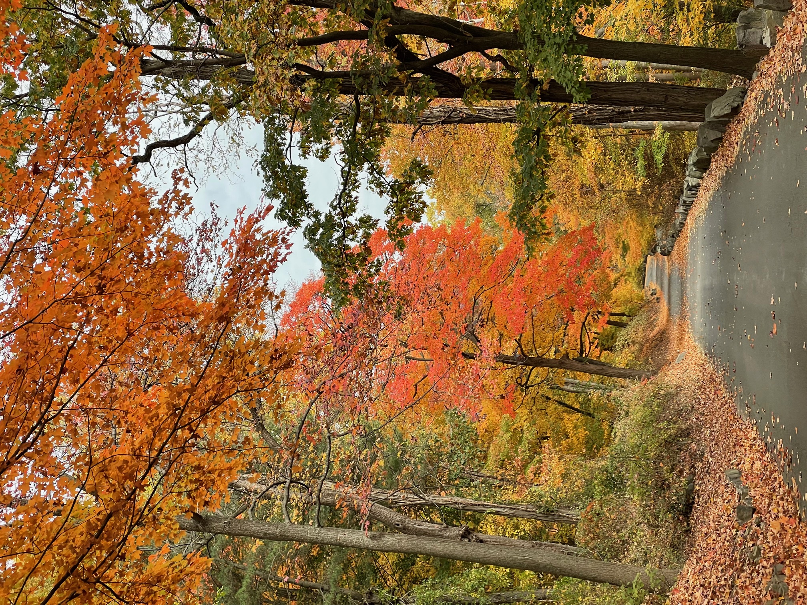

Nyack and back. Fall foliage tour.

This ride was something of a last minute decision. The weather was cool, my schedule was clear, and I was feeling just irritated enough with ‘things in general’ that a long ride might help clear my head. I resolved to get on the bike and just keep going until boredom set in and then turn back. If possible I hoped to get to Nyack as I’ve wanted to do this ride for a long time but never found the right time.
Here are my notes:
- The Palisades are a highlight worth the effort. The road winds under the Palisade escarpment through trees of bright red and with wonderful views of Manhattan beyond the forest and across the Hudson.
- Coming out of the Palisades brings you to the 9W Market where you can stop for a break. I had the breakfast sandwich and a coffee and they were exactly as I had expected - great. After a 15mins fueling stop I headed back out.
- After the 9W market I continued along the 9W where you are riding in the shoulder on the side of the road. It’s not busy but not the best road. Next time I will take the Erie Rail Trail at that point instead. Oh well, now I know!
- Through the town of Piermont you start to see the Tappan Zee bridge in the distance. It seems far but there’s relief that it is clearly a flat bridge. The town must get a lot of cyclists on the weekend as you pass many signs warning of $250 penalty for not riding single file.
- There are many rest zones along the bridge but I didn’t find it very nice. The traffic noise is loud and the breeze just carries exhaust. I just pedaled across without stopping. Did I miss something? Maybe a view of downtown Manhattan? I didn’t feel any great need to stop but rather just to get off the bridge.
- After the bridge I stopped to reorient myself and find the next trail back to NYC. It was a little further than I had anticipated and you need to ride on the side of the road again which isn’t particularly nice.
- The trail head is found just next to the cycling cafe. Once on the path it’s just a long trudge all the way to Van Cortland park. The foliage was beautiful and the path in relatively good condition. It wasn’t busy but not empty either. I would think that on busy summer weekends it may get crowded.
- At Van Cortland park I was beat. My bag had broken open and my bike lock was hanging out. At the time I thought I had lost my repair kit, but it later turned out that I hadn’t brought it! Anyway, I’ve done the section from Van Cortland park through Bronx and into Manhattan before. So, I decided to jump on the 1 train. And, I was happy with that decision. Not easy to get on the bike through the turnstile though. Did I do it wrong?
Overall a good day out, especially to see the foliage. I’ll do it again next November.